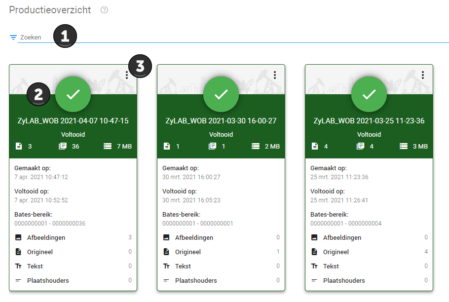
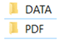

Om de productie te downloaden begeeft u zich naar naar het Configuratie dashboard, vervolgens klikt u hier op de tegel Productieoverzicht.
Hier ziet u alle producties van uw zaak. Bij 1 kunt u zoeken naar een specifieke productie. Bij 2 kunt u de betreffende productie downloaden, zodra u uw muis over het groene bolletje beweegt verandert dit in een download knop. Bij 3 opent u een menu waar u de opties krijgt tot downloaden, om enkel de inventarislijst (load file) te downloaden of te wijzigen, de instellingen opnieuw te gebruiken of de betreffende productie te verwijderen.

Een productie wordt gedownload in een ZIP-bestand. In de map DATA vindt u uw inventarislijst, hoe u deze het beste kunt openen vindt u bij Het openen van de inventarislijst in Excel. In de map PDF vindt u uw documenten, u dient tweemaal door te klikken op de mappen genaamd 000000.
